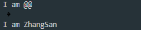
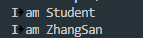

在实际的编程过程中，我们往往还需要一组类型不同的数据，例如对于学生信息登记表，姓名为字符串，学号为整数，年龄为整数，所在的学习小组为字符，成绩为小数，因为数据类型不同，显然不能用一个数组来存放。
struct 结构体名{
结构体需要的变量;
}
结构体是一种集合，它里面包含了多个变量或数组，它们的类型可以相同，也可以不同，每个这样的变量或数组都称为结构体的成员（Member）。
简单理解，结构体就是一种自定义的数据类型，可以认为它跟int char等数据类型完全一致。区别就在于结构体是基本数据机构的集合，是由创建者自定义的，创建者拥有绝对的自主权。
结构体的优势就在于很方便地进行多数据管理。
#include <stdio.h> #include <string.h> struct student{ char name[16]; int age; int grade; }; struct teacher{ char *name;//危险 int age; int level;//职称 }; int main() { struct student ZhangSan; struct teacher WangEr; ZhangSan.age = 16; WangEr.age = 50; WangEr.name = "WangEr";//危险 strcpy(ZhangSan.name, "ZhangSan"); // ZhangSan.name = "ZhangSan";//不能编译通过 return 0; }
在C语言中，结构体不能包含函数。在面向对象的程序设计中，对象具有状态（属性）和行为，状态保存在成员变量中，行为通过成员方法（函数）来实现。C语言中的结构体只能描述一个对象的状态，不能描述一个对象的行为。在C++中，考虑到C语言到C++语言过渡的连续性，对结构体进行了扩展，C++的结构体可以包含函数，这样，C++的结构体也具有类的功能，与class不同的是，结构体包含的函数默认为public，而不是private。
#include <stdio.h> #include <string.h> struct student{ char name[16]; int age; int grade; void say() { printf("I am %s\n", name); } }; struct teacher{ char *name;//危险 int age; int level;//职称 }; int main() { struct student ZhangSan; struct teacher WangEr; strcpy(ZhangSan.name, "ZhangSan"); ZhangSan.say(); return 0; }
#include <stdio.h> #include <string.h> struct student{ char name[16]; int age; int grade; void say() { printf("I am %s\n", name); } }; struct teacher{ char *name;//危险 int age; int level;//职称 void say() { printf("I am %s\n", name); } }; int main() { struct student ZhangSan; struct teacher WangEr; ZhangSan.say();//I am @@, 内存里面是什么就输出什么 strcpy(ZhangSan.name, "ZhangSan"); ZhangSan.say();//I am ZhangSan return 0; }

#include <stdio.h> #include <string.h> struct student{ char name[16]; int age; int grade; student() { strcpy(name, "Student"); } void say() { printf("I am %s\n", name); } }; struct teacher{ char *name;//危险 int age; int level;//职称 void say() { printf("I am %s\n", name); } }; int main() { struct student ZhangSan; struct teacher WangEr; ZhangSan.say(); strcpy(ZhangSan.name, "ZhangSan"); ZhangSan.say(); return 0; }

结构体sizeof的结果往往都比声明的变量总长度要大。
数据成员对齐规则：结构（struct或联合union）的数据成员，第一个数据成员放在offset为0的地方，以后每个数据成员存储的起始位置要从该成员大小的整数倍开始（比如int在32位机为４字节，则要从4的整数倍地址开始存储）。
结构体作为成员：如果一个结构里有某些结构体成员，则结构体成员要从其内部最大元素大小的整数倍地址开始存储。（struct a里存有struct b，b里有char，int，double等元素，那b应该从8的整数倍开始存储。）
收尾工作：结构体的总大小，也就是sizeof的结果，必须是其内部最大成员的整数倍，不足的要补齐。